点击任意处或按 Esc 关闭 · 图片来自 Google Maps
绿色列 = 推荐，已按「不乱花钱」排过：全程只在三顿上花钱（🍲 Day 2 采尔马特芝士火锅、🥧 Day 6 卢塞恩 Galliker 午市、🥩 Day 7 苏黎世瑞士第一牛排），其余走自助 / 超市 / 平价馆子。想省或想升级都在备选列里。
★ 评分和照片来自 Google Maps 实时数据，点餐厅名可直接跳转地图。价格为每人 CHF，不含酒水。
需订 建议提前预订 · 待确认 10 月是否营业需核实 · 现金 不收卡。
📱 手机上表格可左右滑动
| 时间 | 当天行程 | 餐 | 推荐 | 备选餐厅 | 备选超市 不想出去吃 |
推荐理由 | 备注（怎么过去 / 多久） |
|---|---|---|---|---|---|---|---|
| Day 1 10/3 周六 | 日内瓦机场 → 蒙特勒（Territet 站）→ 日内瓦湖滨散步 → 西庸城堡（外观） | 晚餐 | 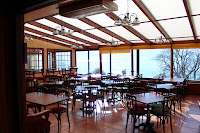 | 车站便利店 CHF 8–15 Coop Pronto / avec | 落地第一晚不折腾。汉堡（配格鲁耶尔芝士+蘑菇）、爱尔兰炖肉、fish & chips 分量足，有 Halal 和素食。 注意：Safran 的 Google 评分其实非常高（4.7 / 4100 条），比 Barrel Oak 高不少 —— 只是贵一倍。想第一晚就吃好的，它值这个钱。 | 机场→蒙特勒火车 1h15 直达，每小时 2 班。 ⚠️ 你在 Territet 下车，两家店都在蒙特勒市区：Barrel Oak 在 Av. des Alpes 37（近火车站），Safran 在 Grand-Rue 81（湖边）。沿湖滨大道走 20–25 分钟，正好是行程里的「湖滨散步」，或坐一站火车 3 分钟。 ✅ 更正：蒙特勒 Coop（Rue de la Paix 4）周六开到 19:00，你约 18:30 到，赶得及但别磨蹭；Migros（Pl. du Marché 6）开到 19:00。赶不上就走车站便利店。 | |
| Day 2 10/4 周日 | 蒙特勒 → Visp → 采尔马特 → 戈尔内格拉特 3089m 全景台（Riffelsee 倒影）→ 采尔马特（日照金山） | 午餐 | 采尔马特主街面包房 / 快餐 CHF 15–25 Bahnhofstrasse 沿街 | 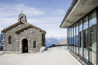 | 12:30 才到站，吃快的，把时间留给下午山景、把钱留给晚上的火锅。 3100 Kulmhotel 是阿尔卑斯最高的酒店，评分 4.6，能边吃边正对马特洪峰 —— 贵一点但不坑。 | 蒙特勒→Visp→采尔马特 约 2.5–3h（Visp 换乘）。餐厅都在车站外主街上，出站即是。齿轨火车 Zermatt→Gornergrat 33 分钟。 ✅ 更正：采尔马特 Coop 就在出站正对面（Bahnhofplatz 6），周日也开 8:00–20:00 —— 原攻略「主街 Coop 买简餐」当天是成立的（我之前说关门，查错了）。 | |
| 晚餐 | 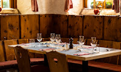 | 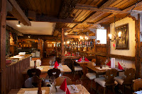 | 全程唯一一顿正经芝士火锅就吃这顿。瓦莱州是 fondue / raclette 的原产地，在采尔马特吃比在苏黎世吃更正宗，价格反而便宜一截（苏黎世 Swiss Chuchi 要 50–70）。吃了这顿，后面苏黎世就不用再花这个钱。 好消息：Google 显示它每天 12:00–21:30 营业，周日也开。 | Whymper Stube 在 Bahnhofstrasse 80（Monte Rosa 酒店），车站步行约 5 分钟。 ⚠️ 原攻略推荐的「采尔马特 Hotel Falken」并不存在 —— Hotel Falken 在翁根（和卢塞恩），采尔马特没有这家店。已替换为真实存在的 Schäferstube（Riedstrasse 2，Hotel Julen 旗下，4.6 分 / 1244 条）。 | |||
| Day 3 10/5 周一 | 采尔马特 → Visp → 施皮茨（城堡 + 湖边，行李寄存车站）→ 因特拉肯 → 翁根（住） | 午餐 | 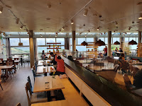 | 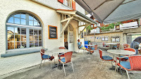 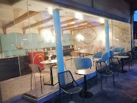 | 寄完行李上楼就吃。瑞士人自己天天吃的那种自助，热菜现打、有汤有沙拉，CHF 15–25 管饱。晚上翁根有 Bären 那顿好的，中午没必要再花钱。 | 采尔马特→Visp→施皮茨 约 1.5h。 Migros 在 Bahnhofstrasse 火车站旁，出站即到；Krone 在 Seestrasse 28，离施皮茨城堡约 600m（几家里最近）；Mia Osteria 在 Thunstrasse 6，约 1km。 行李用施皮茨站行李柜（大件约 CHF 9–12）。 | |
| 晚餐 | 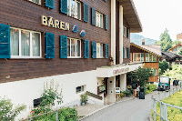 | 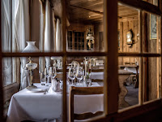 Coop Wengen 熟食 CHF 10–15 18:30 关门 | Google 4.8 分（537 条），是翁根村里评价最高的一家，瑞士菜量大稳定，香草用自家花园的。 村子小、餐厅少，订位同时也等于确认了它 10 月还开着，一举两得。 备选 Restaurant 1903 评分只有 4.1（71 条），别抱太高期待。 | 施皮茨→因特拉肯→翁根 约 1.5h。Bären 在 Am Acher 1363，村中心步行约 5 分钟，每天 18:00–21:30 只做晚餐。 ⚠️ 本日时间风险最大：19:30 前必须到翁根。翁根餐厅厨房 20:00 前后停单、Coop 18:30 关门。施皮茨游览压在 2 小时内，17:30 前上车。 | |||
| Day 4 10/6 周二 | 翁根 → 小夏戴克 → 少女峰 3454m（观景台 / 冰宫 / 雪原）→ 翁根 | 午餐 | 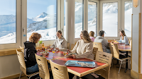 | 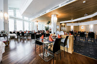 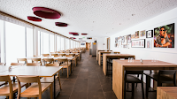 自带三明治 CHF 10–15 前一晚 Coop 买 | 三家都在山顶站内。Aletsch 最实在，营业 10:15–15:30。 但按 Google 评分，Restaurant Crystal 明显更好（4.6 / 846 条，vs Aletsch 4.2、Bollywood 3.9） —— 只开 11:00–14:30，想坐下来好好吃就它。 最省是前一晚在翁根 Coop 买三明治带上去，一天能省 25–30。 | 翁根→少女峰登山火车 约 1.5h（小夏戴克换乘），下山同样 1.5h，回翁根约 15:00–16:00。三家都在 Jungfraujoch 站内，出站沿通道即到。 ⚠️ 12:00–13:00 排队极长，建议 11:15 前先吃再逛观景台冰宫，或 13:30 后吃（注意 Crystal 14:30 就停）。 原攻略写的「Jochstation 自助餐厅」不存在 —— Jochstation 是车站名。 | |
| 晚餐 | 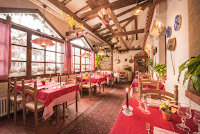 | 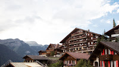 | 上了一天少女峰已经累了 —— 这家不用订、不用换衣服、吃完就能睡。 Caprice 是翁根最「正经吃一顿」的选择（酒店已更名 Maya Caprice Boutique Hotel & Spa，4.5 / 266 条），但 CHF 50–80 在这趟行程里算贵的。 | 两家都在翁根村内，步行 5 分钟范围（翁根是无车悬崖小镇，从头走到尾几百米）。 Da Sina 在 Im Gruebi，Maya Caprice 在 Schonegg 1333d，离缆车站约 200m。 | |||
| Day 5 10/7 周三 | 翁根 → 劳特布伦嫩（施陶巴赫瀑布）→ 米伦（无车悬崖村 + 轻徒步）→ 翁根 | 午餐 | 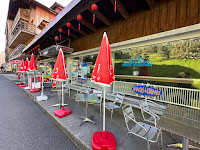 | 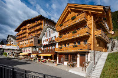 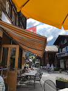 米伦 Coop 三明治 CHF 10–15 带去徒步路上吃 | 黑椒牛柳、咕咾鸡分量很足，老板 1997 年开到现在。连吃几天西餐后最好的换口味。 Eiger Guesthouse 评分其实更高（4.6 / 536 条）且全年营业，10 月歇业风险最低，还更便宜 —— 稳妥派选它。 Stägerstübli 是本地人爱去那家（芝士火锅、raclette、Spätzli、奶油小牛肉炖菜）。 | 翁根→劳特布伦嫩 15 分钟，换缆车 + 小火车上米伦 约 20 分钟。 Tham 和 Stägerstübli 在主街步行街上，Eiger Guesthouse 正对米伦车站。 ⚠️ Tham 只收现金（CHF / EUR / USD），每天 12:00–15:00 / 17:30–20:30。 米伦非常随意，登山服吃饭完全没问题。 | |
| 晚餐 | 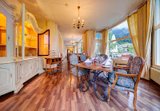 | 省钱且稳妥，走了一天徒步不用换衣服直接去。 ⚠️ Chez Meyer's 我要更正之前的说法：① 营业日是 周三–周六 19:00–22:00（周日到周二休），Day 5 周三确实能去；② 但价格是套餐制 —— 3 道 CHF 108、5 道 CHF 158 每人，远高于我之前估的 60–90；③ 酒店官网挂的是「2026 年 12 月 17 日起重新开业」，10 月很可能根本不营业。想去务必先打电话问清楚。 | 米伦→劳特布伦嫩→翁根 约 40 分钟。三家都在翁根村内步行范围。 Chez Meyer's 在 Hotel Regina（Schonegg 中心），有钢琴伴奏和山景，菜单是主厨定的惊喜菜单不能点菜，Google 仅 40 条评价（4.3）。 | ||||
| Day 6 10/8 周四 | 翁根 → 因特拉肯 → 卢塞恩（卡佩尔廊桥 / 狮子纪念碑 / 冰河公园 / 穆塞格城墙）→ 苏黎世（班霍夫大街） | 午餐 | 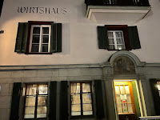 | 值得花钱的第二顿。必点当地名菜 Chögelipastetli（酥皮盅装小牛肉蘑菇），还有小牛头、牛肚、Läberli 这些老派菜，别处吃不到。 关键是它排在中午 —— 午市套餐比晚市便宜近一半，份量一样。缺点是有点吵，Google 只有 4.3（302 条），冲的是「本地人的百年老店」而不是网红分数。 想稳一点选 Bolero：4.6 分、2239 条，卢塞恩评价最好的餐厅之一。 | 翁根→因特拉肯→卢塞恩 约 2.5–3h（黄金山口精华段，建议订座、坐右侧，3 小时一趟错过很麻烦）。 Galliker 在 Schützenstrasse 1（Kasernenplatz），卢塞恩站步行约 8–10 分钟；Bolero 在 Bundesplatz 18，站边几分钟，但在新城不在老城，走到廊桥约 10 分钟 —— 下车先吃再进老城很顺。 ⚠️ Galliker 只接电话订位，周一周日休，厨房 11:15–14:30。 | ||
| 晚餐 | 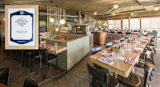 | 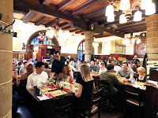 | 当天赶路累。1962 年开在 Bellevue 广场的国民小吃，站着吃的圣加仑烤肠，全城最便宜的靠谱一餐，5696 条评价 4.4 分。二楼还有能看苏黎世湖的坐下餐厅。 | 卢塞恩→苏黎世 50 分钟，每 30 分钟一班。 Sternen Grill 在 Theaterstrasse 22（Bellevue 广场），苏黎世 HB 坐电车 2–3 站，或步行约 15 分钟，每天开到 23:45。 Zeughauskeller 在 Bahnhofstrasse 28A（近 Paradeplatz），苏黎世 HB 步行 5–8 分钟，每天 11:30–23:00，240 个室内座位但从中午就开始满。 | |||
| Day 7 10/9 周五 | 苏黎世 → 瓦杜兹（列支敦士登，城堡全景机位）→ 兰德夸特奥莱 → 苏黎世 | 午餐 | 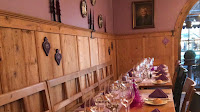 | 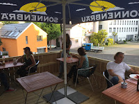 | 正宗列支敦士登本地菜：Rösti Vaduzerart、Spätzle、野味季节菜，香草来自自家花园。Google 上它叫 Adler 1908，4.5 分（412 条），比 Tripadvisor 的 4.0 高不少。 Made in Italy 性价比最高（4.6 / 271）；Torkel 是瓦杜兹最高分（4.8 / 296），16 分 GaultMillau，开在王室 Herawingert 葡萄园里。 | 苏黎世→Sargans 换巴士→瓦杜兹 约 1.5–2h（列支敦士登没有火车站）。三家都在市中心步行范围（Herrengasse / Hintergass）。 ⚠️ 三家营业时间都很窄，周五当天：Adler 09:00–17:00（周六日全休）· Made in Italy 10:00–14:00 · Torkel 午市只有 12:00–13:30。别踩空。 奥莱里也有餐饮但不值得专门吃。瓦杜兹城堡是王室住所不对外开放，只能外观和远景打卡。 | |
| 晚餐 | 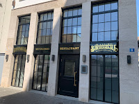 | 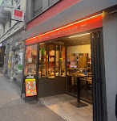 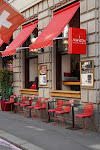 | 全行程最贵、也最值得的一顿。Metzgerei（肉铺）和餐厅开在同一屋檐下 —— 进门先在肉柜前自己挑一块，瑞士 LUMA 肋眼、美国野牛里脊、日本/澳洲和牛都有，挑完现烤。Google 4.7 分（1286 条）。 2026 年 World's 101 Best Steak Restaurants 全球第 64 名、瑞士第 1、德奥瑞区第 1，米其林指南 2025 收录。 ⚠️ 小红书笔记里写的「世界第 51」是往年名次，2026 年榜单是第 64 —— 瑞士第 1 是准确的。参考消费：4 人 CHF 275（约 69/人，含酒水）。 想省就选 Thali House（4.7 / 3052 条，比 Manzoni Bar 的 4.1 好得多）。 | 瓦杜兹→苏黎世 约 1.5–2h。 Williams 在 Schifflände 6，Bellevue 广场旁老城 Hechtplatz，苏黎世 HB 电车 2–3 站（和 Sternen Grill 同一片区）。 ⚠️ 周日休息；周一–周五 11:30–14:00 / 17:00–23:00（热菜供到 21:30）。官网 Book a table 在线预订，8 人以上需邮件。 为什么排在周五：Day 6 到苏黎世已是傍晚偏晚、Day 8 周六最难订，周五最从容。 | |||
| Day 8 10/10 周六 | 苏黎世 → 圣加仑（修道院图书馆，世界遗产）→ 阿彭策尔（彩绘老街）→ 苏黎世 | 午餐 | 阿彭策尔主街 Hauptgasse 小馆 CHF 30–50 Appenzeller 奶酪 / Siedwurst | 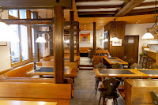 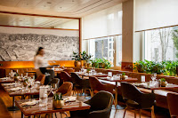 | 阿彭策尔比圣加仑更有地方特色。必点 Appenzeller 奶酪（瑞士最有个性的硬奶酪之一）、Siedwurst 水煮小牛肉肠配洋葱酱、Chäshörnli 芝士通心粉配苹果泥。主街彩绘房子里 Gasthaus 密集，挑评分 4.0 以上的即可。 Fondue Beizli（全名 Fondue Beizli「Neueck」）Google 4.7 分 / 951 条，比预期高很多，是圣加仑很硬的一家。 | 苏黎世→圣加仑 约 1h，圣加仑→阿彭策尔 约 45 分钟。建议图书馆看完直接去阿彭策尔吃，主街离车站步行 3–5 分钟。 ⚠️ Fondue Beizli 在圣加仑 Brühlgasse 26，不在阿彭策尔（站步行约 8 分钟）；Bistro St.Gallen 在 Wassergasse 7。 原攻略备注「上午早去，堡内多逛逛」是别的版本留下的 —— 阿彭策尔没有城堡。 | |
| 晚餐 | 平价收尾。芝士火锅 Day 2 在采尔马特已经吃过更正宗的了，苏黎世没必要再花 CHF 50–70 吃第二次。 从阿彭策尔回来晚，Sternen Grill 开到 23:45 最保险。 ⚠️ Manzoni Bar 的 Google 评分只有 4.1（185 条），明显弱于另外两家，别抱期待 —— 当咖啡+简餐还行。 | 阿彭策尔→苏黎世 约 1.5–2h。Manzoni Bar 在 Schützengasse 15，苏黎世 HB 步行 2 分钟。 ⚠️ 周六是苏黎世餐厅最满的一天 —— 要吃 Zeughauskeller 务必订位。 苏黎世三晚这样铺开不重样：Day 6 烤肠 → Day 7 牛排 → Day 8 烤肠/简餐。 | |||||
| Day 9 10/11 周日 | 苏黎世 → 莱茵瀑布 → 沙夫豪森 → 莱茵河畔施泰因 → 回苏黎世取行李 → 日内瓦 | 午餐 | Inseli Bistro（瀑布小岛） CHF 15–30 每天 09:00–18:30 · 免订 | 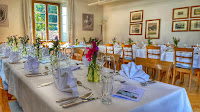 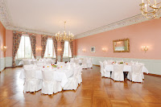 | Inseli Bistro 和 Schlössli Wörth 在莱茵瀑布同一座小岛上 —— 景一模一样，价钱只要一半，还不用订位。 想坐下来好好吃就选 Schlössli Wörth（12 世纪城堡，六角塔楼里的全景餐厅，靠窗位要专门指定），不过 Google 只有 4.2（1041 条），是「位置分」大于「菜分」的典型。 施泰因的 Rheinfels 反而评分更高（4.5 / 466），主打鱼。 | 苏黎世→沙夫豪森 约 40 分钟，坐到 Neuhausen Rheinfall 站，步行一小段到河滨步道。Schlössli Wörth 在 Rheinfallquai 30，周日 11:30–21:30。 参考时间线：苏黎世 08:30 出发 → 莱茵瀑布 09:20–11:30 → 施泰因 12:00–14:30（含午餐）→ 回苏黎世 16:00 取行李 → 17:00 上车。 | |
| 晚餐 | 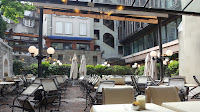 | 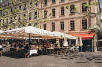 Cornavin 火车站内 CHF 15–35 周日保底，一定开 | 好消息：这餐比我之前判断的安全得多。Brasserie Lipp 每天 08:00 开到次日 01:00，周日照常，4.5 分 / 4376 条 —— 就算 21:00 才到日内瓦也完全来得及坐下来好好吃一顿法式 brasserie。 Café du Centre 周日也开到 23:00（4.1 / 2773）。 实在赶就 Cornavin 站内 —— 瑞士大车站餐饮不受周日休业限制，约开到 21:00。 | 苏黎世→日内瓦 2h45，实际抵达约 20:00–21:00。Cornavin→机场火车仅 6 分钟。 Brasserie Lipp 在 Rue de la Confédération 8（Confédération Centre），Cornavin 站步行约 10 分钟或电车 1–2 站；Café du Centre 在 Place du Molard 5，再往湖边一点。 老城名店 Les Armures、Café du Soleil 的芝士火锅几乎永远满座，当天到得晚赶不上 —— 而且 Day 2 已经吃过更正宗的了。 | |||
| Day 10 10/12 周一 | 日内瓦 citywalk（老城 / 大喷泉 / 花钟）→ 日内瓦机场 → 13:20 返程 | 早餐 | 酒店早餐 CHF 含 最省事 | 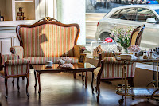 Cornavin 站内 / 机场面包房 CHF 10–20 | 9:30 出发去机场，时间很从容 —— 早上完全可以先 citywalk 一小时再走。 Muller's Factory 的营业时间已确认：周一到周六 08:30–21:00（之前标的「待确认」可以去掉了），4.4 分 / 1118 条。 | Cornavin→机场火车 仅 6 分钟，最早 4:00 就有车，班次密集。 Muller's Factory 在 Place du Cirque 4，离 Cornavin 步行约 12 分钟，在老城方向 —— 和 citywalk 顺路。 | |
| 午餐 | Coop 三明治带上飞机 CHF 10–20 | 机场餐饮 CHF 25–45 | 13:20 起飞，机上第一餐通常要 14:30 之后，先垫一下。机场里吃贵不少。 | Cornavin 站内和机场公共区都有 Coop。机场商店每天 06:00–21:00 营业，周一正常开。 |
按「行程安排＝大本营变化，核心内容＝当天实际玩的地方」复核。Day 7 瓦杜兹、Day 8 圣加仑、Day 9 沙夫豪森的午餐位置都是对的。以下是需要改的：
| # | 位置 | 问题 | 修正 |
|---|---|---|---|
| 1 | Day 2 | 「采尔马特 Hotel Falken」这家店不存在。Hotel Falken 在翁根（Falken beim Gruebi, 3823 Wengen）和卢塞恩，采尔马特没有这家。Google Places 也搜不到。原攻略把它列成了采尔马特的晚餐。 | 换成真实存在的 Restaurant Schäferstube（Riedstrasse 2，Hotel Julen 旗下，4.6 分 / 1244 条），炭烤羊排出名。首推仍是 Whymper Stube。 |
| 2 | Day 2 | 湖名写错，且午餐餐厅在另一条线上。原文写「Rottenboden 下车看 Stellisee 倒影」，午餐推荐「Buffet Bar Sunnegga」。但采尔马特有两条分居山谷两侧、一天走不完的线：戈尔内格拉特线（你订的，齿轨 33 分钟到 3089m，湖叫 Riffelsee）和苏内加线（缆车+步行 20 分钟才到 Stellisee，Sunnegga / Fluhalp / Chez Vrony 都在这条）。 | 照原计划走戈尔内格拉特线。把「Stellisee」改成「Riffelsee」；午餐改采尔马特村里，或山顶 3100 Kulmhotel 自助（4.6 分）。 |
| 3 | Day 2 | 午餐时间对不上。蒙特勒→Visp→采尔马特 约 2.5–3h，加上早上溜达 1 小时，实际抵达 12:00–13:00。这个点先上山再找饭吃，会一路饿到下午 2 点多。 | 落地先在村里吃午餐（12:30–13:30），再上山，下午专心看景等日照金山。芝士火锅放晚餐（Whymper Stube 每天 12:00–21:30，周日也开）。 |
| 4 | Day 4 | 「Jochstation 自助餐厅」不存在 —— Jochstation 是车站名，不是餐厅名。 | 山顶实际三家：Aletsch Self-Service（4.2，10:15–15:30）、Restaurant Crystal（4.6 分最高，点餐制，11:00–14:30）、Bollywood（3.9，印度菜自助）。12:00–13:00 排队极长，错峰到 11:15 前或 13:30 后。 |
| 5 | Day 5 | Piz Gloria 不在米伦。它在雪朗峰山顶 2970m，从米伦还要坐 Mürren→Birg→Schilthorn 两段缆车，往返 1.5–2h、加价约 CHF 85+。你已确认不上雪朗峰。 | 换成米伦村里：Tham 中餐（4.5 / 760，只收现金）、Eiger Guesthouse（4.6 / 536，全年营业）、Stägerstübli（4.3 / 824，1901 老木屋）。 省下的时间走 米伦→格吕奇阿尔卑平路徒步，约 1.5h，正对艾格/僧侣/少女三峰。 |
| 6 | Day 5 | Chez Meyer's 我之前说错了三处。之前写「只开周三–周五、CHF 60–90」。 | 实际：① 周三–周六 19:00–22:00（周日–周二休），Day 5 周三确实能去；② 价格是套餐制 3 道 CHF 108 / 5 道 CHF 158 每人；③ 酒店官网挂「2026/12/17 起重新开业」，10 月很可能不营业。 按你们的预算，建议直接跳过，除非打电话确认后还想去。 |
| 7 | Day 1 | Coop 买不到东西，而且你在 Territet 下车不是 Montreux。10/3 周六，16:40 落地，到蒙特勒 18:30–19:00 —— Coop 早关了。 | 直接吃餐厅，买水去车站便利店。从 Territet 沿湖走 20–25 分钟到市中心，正好是「湖滨散步」。 另：Safran 的 Google 评分 4.7 / 4100 条，比 Barrel Oak（4.2）高不少，预算够就选它。 |
| 8 | Day 9 | 周日 + 晚到日内瓦。玩完回苏黎世取行李再坐 2h45，实际到 20:00–21:00。原推荐的 Spinella / 21 Club / Le Darshana 周日晚都不保险。 | 好消息：比想象的安全。Brasserie Lipp 每天 08:00 开到次日 01:00、周日照常（4.5 / 4376），21 点到也能坐下好好吃。Café du Centre 周日开到 23:00。实在赶就 Cornavin 站内（周日不受休业限制）。 |
| 9 | 多处 | 位置/评分说明需修正（不影响可行性）。 | · 卢塞恩 BOLERO 是西班牙 tapas + 海鲜饭，在新城 Bundesplatz 不在老城，走到廊桥约 10 分钟 · 苏黎世 EQUINOX 在西区 Prime Tower 旁，离老城远，不建议专程 · Fondue Beizli 在圣加仑市区（Brühlgasse 26），不在阿彭策尔 · Manzoni Bar Google 只有 4.1 / 185 条，弱于同价位的 Thali House（4.7 / 3052） · 瓦杜兹 Adler 在 Google 上叫 Adler 1908，4.5 / 412 条，周六日全休、平日只到 17:00 |
电话可直接点击拨打，邮箱可点击发信，在线订位直达官网页面。建议出发前 2–3 周集中处理一次 —— 山区的店，订位同时也等于确认它 10 月还开着。
| 优先级 | 餐厅 | Day | 预订方式 | 营业时间 | 说明 |
|---|---|---|---|---|---|
| 必订 | Day 7 · 10/9 周五 提前 2–3 周 |
🌐 官网
|
周一–五 11:30–14:00, 5:00–23:00，周六 11:00–23:00，周日 休 | 瑞士第一牛排、世界第 64 名、米其林 2025 收录，临时走进去基本没位。周日休息。8 人以上要发邮件。订不到周五就退周四（Day 6）；周六最难订。 | |
| 必订 | Day 6 · 10/8 周四 提前 1–2 周 |
❌ 不接受网络/邮件
🌐 官网
|
周一 休，周二–六 11:15–14:30, 18:00–12:30，周日 休 | 只接电话订位。周一、周日全休，厨房 11:15–14:30 / 18:00–00:30。18:30 就被本地人坐满，中午去更稳。 | |
| 必订 | Day 2 · 10/4 周日 提前 2–3 周 |
🌐 官网
|
周一–日 12:00–21:30 | 本行程唯一一顿正经芝士火锅。Google 显示每天 12:00–21:30、周日照开。⚠️ 10 月属采尔马特两季之间，Monte Rosa 酒店可能歇业，订之前先确认。 | |
| 必订 | Day 3 / Day 5 提前 2–3 周 |
🔗 官网联系表单
🌐 官网
|
周一–日 6:00–21:30 | 翁根评分最高（4.8 / 537）。每天 18:00–21:30 只做晚餐。村子小、10 月开的餐厅少 —— 订位就是在确认它还开着。 | |
| 先问再说 | Day 5 · 10/7 周三 提前 2–3 周 |
🌐 官网
|
周一二 休，周三–六 7:00–22:00，周日 休 | ⚠️ 三个坑：① 营业日是周三–周六 19:00–22:00；② 套餐 3 道 CHF 108 / 5 道 CHF 158 每人，远超一般预期；③ 酒店官网写的是「2026/12/17 起重新开业」，10 月很可能不营业。也可加 WhatsApp +41 77 937 52 26 问。 | |
| 建议订 | Day 9 · 10/11 周日 提前 1–2 周 |
🔗 官网在线订位
🌐 官网
|
周一–六 11:30–22:30，周日 11:30–21:30 | 只在选它而不选隔壁 Inseli Bistro 时才需要。靠窗全景位要专门指定，不订就只能坐里面看不到瀑布。周日 11:30–21:30。 | |
| 建议订 | Day 6 或 Day 8 提前 3–7 天 |
🔗 官网在线订位
🌐 官网
|
周一–日 11:30–23:00 | 只在想在苏黎世吃顿传统瑞士菜时才需要。每天 11:30–23:00，240 室内座 + 90 室外座。Day 8 是周六，苏黎世最满的一天，别赌。 | |
| 建议订 | 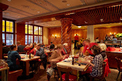 |
Day 6 或 Day 8 提前 3–7 天 |
🌐 官网
|
周一–五 11:30–23:15，周六日 12:00–23:15 | Zeughauskeller 的同类替代，9 种芝士火锅 + raclette。但 Day 2 采尔马特已经吃过火锅了，这家更多是备胎。 |
| 建议订 | Day 4 · 10/6 周二 提前 2–3 周 |
🔗 酒店官网
|
周一–日 07:00–23:00 | 只在想在翁根吃顿好的时才需要（酒店已更名 Maya Caprice Boutique Hotel & Spa）。顺便确认 10 月营业。 | |
| 建议订 | Day 1 · 10/3 周六 提前 1 周 |
🔗 MONA 官网
🌐 官网
|
— | 湖景露台位要订。Google 4.7 分 / 4100 条，比 Barrel Oak 高不少 —— 想第一晚就吃好的选它。 | |
| 建议订 | Day 7 · 10/9 周五 提前 1–2 周 |
🔗 官网
|
周一 休，周二–五 12:00–13:30, 6:30–20:30，周六 6:30–20:30，周日 休 | 瓦杜兹最高分（4.8 / 296），16 分 GaultMillau，王室葡萄园里的历史酒窖。⚠️ 周五午市只有 12:00–13:30，窗口很窄。 | |
| 建议订 | Day 8 · 10/10 周六 提前 3–7 天 |
🔗 官网
|
周一 休，周二–五 11:00–14:00, 5:00–23:00，周六 11:00–23:00，周日 休 | 圣加仑少数周六晚也开的传统瑞士餐厅，4.7 分 / 951 条，会满。 | |
| 建议订 | Day 6 · 10/8 周四 提前 3–7 天 |
🔗 官网在线订位
🌐 官网
|
周一–四 11:30–14:00, 5:30–23:00，周五 11:30–14:00, 5:30–23:30，周六 11:30–23:30，周日 11:30–22:30 | Galliker 的备选，4.6 分 / 2239 条。午市套餐性价比高。 | |
| 建议订 | Day 9 · 10/11 周日 提前 3–7 天 |
🔗 官网
|
周一–日 08:00–01:00 | 每天 08:00–次日 01:00，周日照开 —— Day 9 晚到日内瓦的最佳解。热门时段建议订，但周日晚走进去通常也有位。 | |
| 建议订 | Day 2 · 10/4 周日 提前 2 周 |
周一–日 6:00–22:00 | Whymper Stube 的备选，炭烤羊排出名，4.6 分 / 1244 条。替代了原攻略里并不存在的「采尔马特 Hotel Falken」。 | ||
| 不用订 | Sternen Grill + Sternen Grill Restaurant im oberen Stock. ★4.4 Self Service Restaurant Aletsch ★4.2 Restaurant Crystal ★4.6 Restaurant Bollywood ★3.9 3100 Kulmhotel Gornergrat ★4.6 Tham Restaurant ★4.5 Restaurant Stägerstübli GmbH ★4.3 Eiger Guesthouse Mürren ★4.6 Ristorante Da Sina ★4.1 Migros Restaurant - Spiez - Terminus ★4.3 Restaurant Krone Spiez ★4.4 Mia Osteria & Pizzeria ★4.6 Adler 1908 ★4.5 Made in Italy ★4.6 Thali House ★4.7 Manzoni Bar ★4.1 Barrel Oak, The Irish Pub ★4.2 Bistro St.Gallen ★4.5 Hotel Restaurant Rheinfels ★4.5 Café du Centre ★4.1 Muller's Factory ★4.4 Restaurant 1903 ★4.1
以上直接去即可。米伦 Tham 只收现金；少女峰山顶三家是自助，不接受订位。 | ||||
营业时间来自 Google Maps，为常规时间；10 月山区可能有季节性调整，以电话确认为准。
| 买什么 | 价格 | 说明 |
|---|---|---|
| 🥪 三明治 | CHF 4–8 | 冷柜区一整排，火腿芝士、烟熏三文鱼、素食都有。上山前买两个塞包里，一天省 CHF 25–30（少女峰、戈尔内格拉特山顶餐厅比山下贵 30–50%）。 |
| 🥗 沙拉盒 / 意面盒 | CHF 6–12 | 配叉子直接吃。连着吃几天芝士和肉之后会很想要这个。 |
| 🍗 烤鸡 / 熟食柜 | CHF 10–16 | 大一点的 Coop 有烤鸡和热食柜台。两个人分一只烤鸡 + 面包 + 沙拉，CHF 20 出头吃很饱。 |
| 🧀 瑞士奶酪 | CHF 4–12 | Gruyère（格鲁耶尔，火锅主料）· Emmentaler（大孔奶酪）· Appenzeller（Day 8 阿彭策尔的招牌，味最冲）。真空包装的可以带回国。 |
| 🥓 风干肉 / 香肠 | CHF 6–15 | Bündnerfleisch 格劳宾登风干牛肉（薄切，配面包和红酒绝配）· Cervelat 国民香肠 · Landjäger 猎人肠，适合当徒步干粮。 |
| 🍫 巧克力 | CHF 2–6 | 超市价比机场便宜一半，别留到最后在机场买。Lindt、Cailler（瑞士最老的牌子）、Frey（Migros 自有，性价比之王）、Toblerone。带手信就在超市一次性买齐。 |
| 🍲 即食瑞士菜 | CHF 4–9 | 盒装 Rösti（煎土豆饼，微波即食）· Älplermagronen（牧民通心粉）· 盒装芝士火锅（加热即可，酒店有微波炉就能吃，比餐厅便宜 4/5）。 |
| 🍺 酒水 | CHF 1.5–15 | 啤酒 CHF 1.5–3、瑞士葡萄酒 CHF 8–15，餐厅点一杯就要 CHF 7–10。车站店周日也卖酒。 矿泉水别买 —— 瑞士自来水直接喝，带个水壶。 |
| ☕ 早餐类 | CHF 3–8 | 酸奶、水果、坚果、Gipfeli（瑞士版可颂）、Ovomaltine（阿华田，瑞士发明的，超市有各种衍生品）。酒店不含早餐时靠这个。 |
| 💡 省钱线 | 最低 | 认准 Coop 的 Prix Garantie 和 Migros 的 M-Budget 自有品牌（白底简装），同类商品便宜 30–50%。 |
| 路线 | D1 | D2 | D3 | D4 | D5 | D6 | D7 | D8 | D9 | D10 | 10 天合计 |
|---|---|---|---|---|---|---|---|---|---|---|---|
| 💸 极省 午餐全走超市/自助 |
25 | 50 | 40 | 35 | 35 | 50 | 50 | 45 | 30 | 10 | 370–500 |
| ★ 本文推荐 只在三顿上花钱 |
25–40 | 50–80 | 40–80 | 35–55 | 35–95 | 50–80 | 90–125 含牛排 | 45–90 | 55–95 | 10–20 | 425–755 |
| 全程吃好 每顿都选备选列 |
50–70 | 75–115 | 65–100 | 75–120 | 140–215 | 85–115 | 105–160 | 75–110 | 75–115 | 10–35 | 755–1155 |
每人 CHF，不含酒水。「全程吃好」里 Day 5 的大涨是因为 Chez Meyer's 套餐 CHF 108–158。
| 营业时间 | 午市 11:30–14:00、晚市 18:00–21:30，中间大多关门休息，下午 3 点去基本吃不上正餐。山区 20:00 前后停单。 |
| 周日 / 周六 | 周日超市全国关门，只有约 30 个大火车站里的店开（约 8:00–21:00）。周六超市 17:00–18:00 就关。餐厅周日多半开，但日内瓦、洛桑这些法语区周日晚关得特别多。 |
| 小费 | 账单已含服务费，不需要给 15%。满意就把零头凑整（47.20 给 50）。 |
| 喝水 | 自来水可直饮，街头饮水池也能喝。带水壶显著省钱。餐厅点 tap water 可以问，部分店会婉拒。 |
| 支付 | 绝大多数刷卡 / Apple Pay 通行。例外：米伦 Tham 中餐厅只收现金（CHF / EUR / USD）。山区小店建议备 CHF 50–100 现金。 |
| 穿着 | 山区非常随意，登山服吃饭完全没问题。高档店（Torkel、Chez Meyer's、Williams）稍微整齐一点，但不要求正装。 |
| 山顶餐厅 | 基本不接受预订，先到先得。12:00–13:00 排队最长，务必错峰。别吃太久，算好最后一班下山的车。 |
| 必吃清单 |
🧀 芝士火锅 Fondue（Day 2 采尔马特 Whymper Stube ← 本行程安排在这） 🔥 烤芝士 Raclette（瓦莱州招牌，采尔马特最正） 🥧 Chögelipastetli（Day 6 卢塞恩名菜，Galliker 最正宗） 🥩 干式熟成牛排（Day 7 苏黎世 Williams ButchersTable，自己在肉柜挑） 🌭 圣加仑烤肠（Day 6/8 苏黎世 Sternen Grill，站着吃最有感觉） 🧀 Appenzeller 奶酪 + Siedwurst（Day 8 阿彭策尔） 🍲 Rösti Vaduzerart（Day 7 瓦杜兹，列支敦士登版煎土豆饼） |
出发前 2–3 周（一次性做完）：
出发前 3–7 天：
评分、地址、电话、官网、营业时间、照片均来自 Google Maps Places API，抓取于 2026 年 9 月。餐厅名称可点击直达 Google Maps。
榜单、菜品、历史背景等补充信息来自 Michelin Guide、瑞士国家旅游局（MySwitzerland）、Jungfrau Region / Schaffhauserland / Zermatt 等官方旅游网站及餐厅官网。
价格为每人 CHF 估算，不含酒水，仅供参考。照片版权归 Google Maps 及其贡献者所有。
标「待确认」的项目请务必出发前核实 —— 10 月初正值瑞士山区「两季之间」，营业状态变动频繁，官网信息也可能滞后，直接打电话或发邮件最可靠。
本页由 build.js 从 data/places.json 生成。刷新数据：bash trips/switzerland-2026/refresh-data.sh